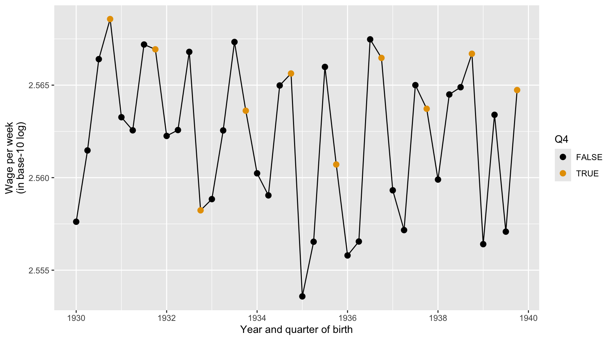
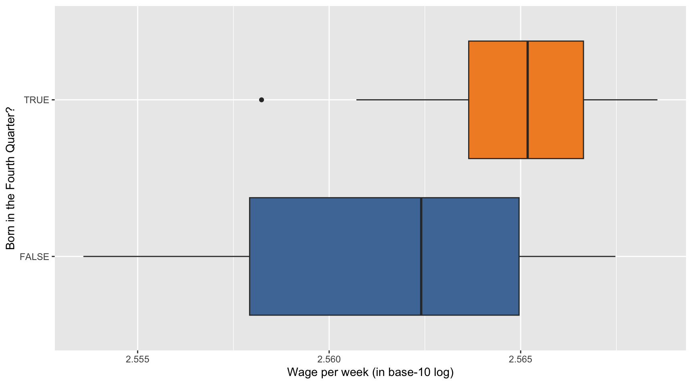
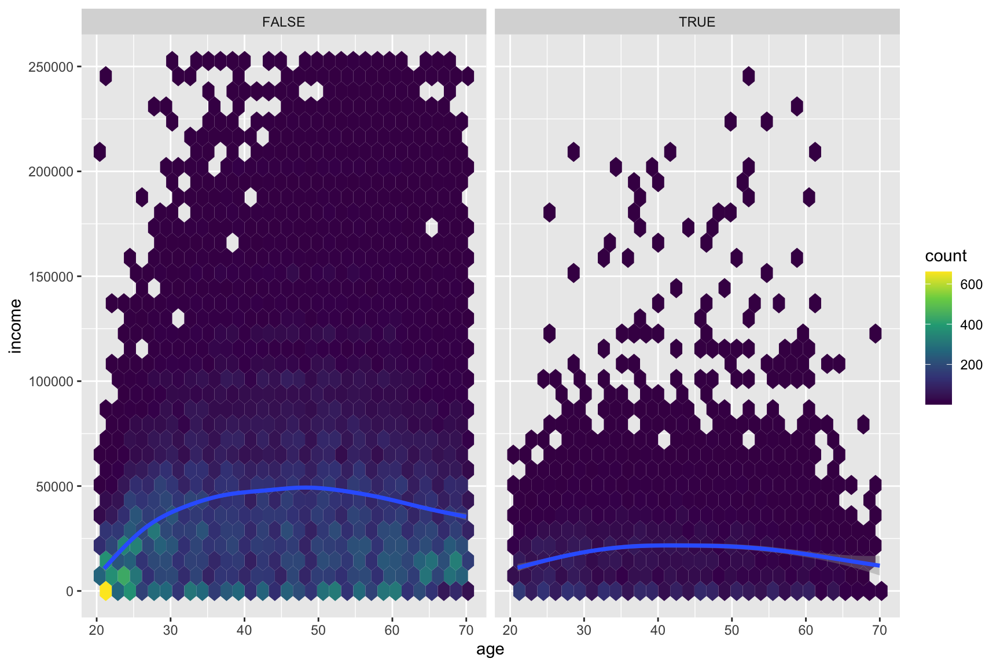

Categorical data distributions are commonly visualized using bar charts, while numerical data distributions are commonly shown with histograms.
True
False
Show answer
True.
Question 2
The popularization of sports analytics was significantly influenced by the “Moneyball” book published in 2003 and its subsequent movie adaptation.
True
False
Show answer
True.
Question 3
Which feature most clearly distinguishes a full Database Management System (DBMS) from basic data storage tools like Excel or Google Sheets?
The ability to store data electronically in tables
The ability to perform queries that filter and select data
The ability to manage updates while enforcing consistency and data validity
The ability to display data in rows and columns
Show answer
c. The ability to manage updates while enforcing consistency and data validity
Question 4
Which of the following best describes the modern “vibe coding” workflow in data analytics?
Writing all SQL and Python code manually to ensure 100% accuracy without AI intervention.
Using drag-and-drop interfaces exclusively without any coding logic.
Outsourcing all coding tasks to third-party distributed agents.
Prompting AI assistants to generate logic flows and code snippets, then reviewing the output for accuracy.
Show answer
d. Prompting AI assistants to generate logic flows and code snippets, then reviewing the output for accuracy.
Question 5
Which of the following is NOT one of the “Four Rules for Co-Intelligence” for working with AI?
Always invite AI to the table
Be the human in the loop (HITL)
Automate everything possible and remove human oversight
Treat AI like a person (but remember it isn’t)
Assume this is the worst AI you’ll ever use
Show answer
c. Automate everything possible and remove human oversight
Question 6
What is a “Schema” in the context of Big Data Management?
The physical hardware used to store the data.
A blueprint that defines how data is organized, including fields and data types.
The process of deleting old data to make room for new data.
The software used to visualize data in charts.
Show answer
b. A blueprint that defines how data is organized, including fields and data types.
Question 7
Which of the following is a characteristic of “Reinforcement Learning from Human Feedback” (RLHF)?
It involves humans ranking or scoring model answers to align the model with human preferences for safety and helpfulness.
It allows the model to learn entirely on its own without any human intervention.
It is primarily used for generating images from text descriptions.
It is a pre-training phase where the model reads vast amounts of text.
Show answer
a. It involves humans ranking or scoring model answers to align the model with human preferences for safety and helpfulness.
Question 8
Which type of visualization is most suitable for showing the distribution of a single categorical variable?
Bar Chart
Histogram
Scatterplot
Line Chart
Show answer
a. Bar Chart
Question 9
To compare how the distribution of a numerical variable differs across categories of another variable, which visualization is most appropriate?
Bar Chart
Histogram
Scatterplot
Boxplot
Show answer
d. Boxplot
Question 10
In the ETL process, which of the following best describes the “Transform” stage’s primary purpose?
Aggregating and filtering data from disparate sources before extraction.
Altering, cleaning, and integrating data to ensure consistency and usability.
Moving transformed data into staging environments for downstream operations.
Ensuring that outdated data is removed or archived for regulatory compliance.
Show answer
b. Altering, cleaning, and integrating data to ensure consistency and usability.
Question 11
What does the term “API” stand for, and what is its primary function as described in the lecture?
Automated Processing Interface; it cleans messy CSV files automatically.
Application Programming Interface; it allows software systems to communicate and request data programmatically.
Advanced Python Integration; it translates R code into Python.
Analytical Pipeline Interface; it is used exclusively for visualizing Tableau dashboards.
Show answer
b. Application Programming Interface; it allows software systems to communicate and request data programmatically.
Question 12
Which statement is most accurate about tokens in the context of large language models (LLMs)?
A token is always exactly one English word
Tokens are always single characters
Tokens exist only at the output side, not at the input side
A token is a unit of text; it may be a character, a whole word, or part of a word
Show answer
d. A token is a unit of text; it may be a character, a whole word, or part of a word.
Questions 13-16
For Questions 13-16, consider the following data.frame, twitter_x_data, displayed below:
UserID
Age
Gender
SubscriptionTier
Country
FollowersCount
LastLoginHour
1
22
Female
Standard
USA
1500
22.5
2
27
Male
Premium
Canada
2300
14.2
3
34
Female
Standard
USA
800
9.8
4
19
Male
Premium
UK
5000
18.3
5
45
Female
Standard
Australia
300
2.7
6
31
Male
Standard
USA
1200
12.1
7
28
Female
Premium
India
4500
16.4
8
23
Male
Standard
Canada
600
20.0
9
37
Male
Premium
USA
3500
7.5
10
29
Female
Premium
UK
900
23.0
AccountAgeDays
SatisfactionLevel
PostsPerWeek
GroupsJoined
IsVerified
365
Very Satisfied
5
10
Yes
730
Satisfied
12
5
No
180
Neutral
3
12
No
1095
Very Satisfied
20
7
Yes
60
Dissatisfied
1
3
No
540
Satisfied
8
8
No
850
Very Satisfied
15
15
Yes
275
Neutral
4
4
No
400
Satisfied
18
9
Yes
660
Very Satisfied
6
6
No
Description of Variables in twitter_x_data:
UserID: Identifier for each user
Age: Age of the user in years
Gender: Gender of the user
SubscriptionTier: Level of Twitter (X) subscription (e.g., Standard → Premium)
Country: Country of residence
FollowersCount: Number of followers
LastLoginHour: Time of last login in hours since midnight
AccountAgeDays: Age of the account in days
SatisfactionLevel: User satisfaction level
PostsPerWeek: Number of posts per week
GroupsJoined: Number of groups joined
IsVerified: Whether the user account is verified
Question 13
What type of variable is SubscriptionTier in the dataset?
Nominal
Ordinal
Interval
Ratio
Show answer
b. Ordinal
Question 14
What type of variable is Country in the dataset?
Nominal
Ordinal
Interval
Ratio
Show answer
a. Nominal
Question 15
What type of variable is LastLoginHour in the dataset?
Nominal
Ordinal
Interval
Ratio
Show answer
c. Interval
Question 16
What type of variable is SatisfactionLevel in the dataset?
Nominal
Ordinal
Interval
Ratio
Show answer
b. Ordinal
Section 2. Filling-in-the-Blanks
Question 17
In analytics, identifying patterns such as “Movie A → Movie B”, where users who watch one movie are likely to watch another with a similar genre (as in recommendation systems), relies on
_______________________________ to discover conditional co-occurrence relationships.
Show answer
association rule
Question 18
A(n) ________________________________ is a visual display of key information, data, and metrics, often used in BI to provide insights at a glance.
Show answer
dashboard
Question 19
________________________________ is Python’s primary library for data manipulation and analysis, offering powerful tools for working with tabular data. You can think of it as the Python counterpart to R’s dplyr (tidyverse): it provides clear, expressive functions for filtering, transforming, summarizing, and reshaping data.
Show answer
pandas
Question 20
________________________________ is the tendency for values of two variables to vary together, and can be visualized using scatterplots.
Show answer
correlation
Question 21
________________________________ data refers to data that is organized in a predefined format—such as rows and columns with a fixed schema—and is commonly stored in spreadsheets or traditional databases.
Show answer
structured
Question 22
When designing visuals, the goal is to convey as much information as possible while minimizing _______________________________ for the audience.
Show answer
cognitive load
Question 23
One of our alumni guest’s companies uses Snowflake as their _______________________________, a centralized repository that stores and manages large volumes of data for analytics and reporting purposes.
Show answer
data warehouse (database management system (DBMS))
Question 24
Three most popular programming languages for data analysts are _______________________________, Python, and R.
Show answer
SQL
Section 3. Data Analysis with R
Question 25
Consider the following vector x:
x <-c(2, 4, 6, 8, 10)
Write the R code to create a new vector called z, where its \(i\)-th entry (\(i = 1,2,3,4, \text{or } 5\)) is the standardized value of \(i\)-th element of x vector.
\[
z_{i} = \frac{x_{i} - \bar{x}}{\sigma_{x}}
\]
\(\bar{x}\): the mean of values in x
\(\sigma_{x}\): the standard deviation of values in x
Answer: ______________________________________
Show answer
z <- (x -mean(x)) /sd(x)
Question 26
Given the data.frame df with variables height and name, which of the following expressions returns a vector containing the values in the height variable?
df:height
df$height
df::height
Both b and c
Show answer
b.df$height
Question 27
Consider the following data.frame, students:
Name
Age
Major
GPA
Alice
22
Business Administration
3.8
Bob
23
Accounting
3.2
Charlie
21
Data Analytics
3.9
Diana
24
Economics
3.5
Which of the following R codes will correctly create a new data.frame with only the Name and GPA variables?
students |> select(Name, GPA)
students |> select(-Age, -Major)
Both a and b
Show answer
c. Both a and b
Question 28
Consider the following data.frame df0:
x
y
Na
7
2
NA
3
9
What is the result of median(df0$y)?
7
NA
8
9
Show answer
b.NA
Question 29
Consider the two related data.frames, df_1 and df_2:
df_1
id
name
age
1
Bob
19
2
Julia
21
4
Zachary
20
df_2
id
major
1
Economics
2
Business Administration
3
Data Analytics
Which of the following R code correctly join the two related data.frames, df_1 and df_2, to produce the resulting data.frame shown below?
id
name
age
major
1
Bob
19
Economics
2
Julia
21
Business Administration
4
Zachary
20
NA
df_1 |> left_join(df_2)
df_2 |> left_join(df_1)
Both a and b
None of the above
Show answer
a.df_1 |> left_join(df_2)
Questions 30-36
For Questions 30-36, consider the following R packages and the data.frame, nyc_dogs, containing individual dog license data from New York City (NYC):
We are also interested in identifying the top five most popular dog names for each gender.
To do this, we first create a new data frame, nyc_dogs_filtered, which includes only the observations where (1) the value of name variable is not missing and (2) the value of gender variable is not missing.
The Nobel Prize in Economic Science in 2021 goes to David Card, Joshua Angrist and Guido Imbens, for their empirical contributions to labor economics, and for their methodological contributions to the analysis of causal relationships.
They have provided us with new insights about the labor market and shown what conclusions about cause and effect can be drawn from natural experiments. Their approach has spread to other fields and revolutionized empirical research.
For Questions 37-40, consider the following R packages and the data.frame, ak91_age, which comes from the 1980 US Census and covers men born 1930–1939, which is used by Joshua Angrist and Alan Krueger’s research article.
The first 20 observations in the ak91_age data frame are displayed below:
QoB
YoB
YoBQ
W
Educ
Q4
1
1930
1930.00
361.0922
12.28041
FALSE
1
1931
1931.00
365.8181
12.54043
FALSE
1
1932
1932.00
364.9678
12.53393
FALSE
1
1933
1933.00
362.1093
12.67319
FALSE
1
1934
1934.00
363.2739
12.64726
FALSE
1
1935
1935.00
357.7532
12.65091
FALSE
1
1936
1936.00
359.5803
12.74304
FALSE
1
1937
1937.00
362.5073
12.83230
FALSE
1
1938
1938.00
362.9918
12.93868
FALSE
1
1939
1939.00
360.0860
13.00299
FALSE
2
1930
1930.25
364.3105
12.42842
FALSE
2
1931
1931.25
365.2228
12.53105
FALSE
2
1932
1932.25
365.2356
12.60960
FALSE
2
1933
1933.25
365.2171
12.63471
FALSE
2
1934
1934.25
362.2778
12.72797
FALSE
2
1935
1935.25
360.1939
12.79693
FALSE
2
1936
1936.25
360.2046
12.81108
FALSE
2
1937
1937.25
360.7164
12.84405
FALSE
2
1938
1938.25
366.8558
13.00766
FALSE
2
1939
1939.25
365.9290
13.01340
FALSE
The ak91_age data frame is with 40 observations and 6 variables.
Description of Variables in ak91_age:
QoB: Quarter of birth
YoB: Year of birth (1930, 1931, …, 1939)
YoBQ: Year and quarter of birth (1930 Q1, 1930 Q2, …, 1939 Q4)
W: Wage per week
Educ: Years of education
Q4: TRUE if quarter of birth is 4; FALSE otherwise.
The followings are the summary of the ak91_age data.frame, including descriptive statistics for each variable.
Data summary
Name
ak91_age
Number of rows
40
Number of columns
6
_______________________
Column type frequency:
logical
1
numeric
5
________________________
Group variables
None
Variable type: logical
skim_variable
n_missing
mean
count
Q4
0
0.25
FAL: 30, TRU: 10
Variable type: numeric
skim_variable
n_missing
mean
sd
p0
p25
p50
p75
p100
QoB
0
2.50
1.13
1.00
1.75
2.50
3.25
4.00
YoB
0
1934.50
2.91
1930.00
1932.00
1934.50
1937.00
1939.00
YoBQ
0
1934.88
2.92
1930.00
1932.44
1934.88
1937.31
1939.75
W
0
365.02
3.37
357.75
362.24
365.53
367.89
370.32
Educ
0
12.76
0.19
12.28
12.64
12.75
12.93
13.12
Question 37
Here we describe the quarterly trend of years of education. Complete the code by filling in the blanks (1)-(3).
ggplot(data = ak91_age, mapping =aes(___(1)___,___(2)___ = Q4)) +___(3)___ +geom_point(size =2.5) +scale_color_colorblind() +labs(x ="Year and quarter of birth",y ="Years of education")
Blank (1)
x = YoBQ, y = Educ
y = YoBQ, x = Educ
x = YoB, y = Educ
y = YoB, x = Educ
Both a and b
Both c and d
Show answer
a
Blank (2)
fill
color
Both a and b
Show answer
b
Blank (3)
geom_scatterplot
geom_point
geom_line
geom_smooth
geom_histogram
geom_boxplot
geom_bar
geom_col
Show answer
c
Question 38
Here we describe the quarterly trend of the base-10 log of wage per week. Complete the code by filling in the blanks (1)-(3).
ggplot(data = ak91_age, mapping =aes(___(1)___,___(2)___ = Q4)) +___(3)___ +geom_point(size =2.5) +scale_color_colorblind() +labs(x ="Year and quarter of birth",y ="Wage per week (in base-10 log)")

Blank (1)
x = YoBQ, y = log(W)
y = YoBQ, x = log(W)
x = YoBQ, y = log10(W)
y = YoBQ, x = log10(W)
Both a and c
Both b and d
Show answer
a
Blank (2)
fill
color
Both a and b
Show answer
b
Blank (3)
geom_scatterplot
geom_point
geom_line
geom_smooth
geom_histogram
geom_boxplot
geom_bar
geom_col
Show answer
c
Question 39
Here we describe how the distribution of the base-10 log of wage per week varies by Q4. Complete the code by filling in the blanks (1)-(3).
ggplot(data = ak91_age, mapping =aes(___(1)___,___(2)___ = Q4)) +___(3)___(show.legend =FALSE) +scale_fill_tableau() +labs(x ="Wage per week (in base-10 log)",y ="Born in the Fourth Quarter?")

Blank (1)
x = YoBQ, y = log(W)
y = YoBQ, x = log(W)
x = YoBQ, y = log10(W)
y = YoBQ, x = log10(W)
x = Q4, y = log(W)
y = Q4, x = log(W)
x = Q4, y = log10(W)
y = Q4, x = log10(W)
Both a and c
Both b and d
Both e and g
Both f and h
Show answer
d
Blank (2)
fill
color
Both a and b
Show answer
a
Blank (3)
geom_scatterplot
geom_point
geom_line
geom_smooth
geom_histogram
geom_boxplot
geom_bar
geom_col
Show answer
f
Question 40
Provide a data-driven narrative for the ak91_age data frame, incorporating insights from the visualizations created in Questions 37, 38, and 39.
Show answer
Questions 41-44
For Questions 41-44, consider the following R packages and the data.frame, health_cust, which contains demographic information about individuals with or without health insurance.
The first 10 observations in the health_cust data frame are displayed below:
custid
sex
is_employed
income
marital_status
housing_type
000006646_03
Male
TRUE
22000
Never married
Homeowner free and clear
000007827_01
Female
NA
23200
Divorced/Separated
Rented
000008359_04
Female
TRUE
21000
Never married
Homeowner with mortgage/loan
000008529_01
Female
NA
37770
Widowed
Homeowner free and clear
000008744_02
Male
TRUE
39000
Divorced/Separated
Rented
000011466_01
Male
NA
11100
Married
Homeowner free and clear
000015018_01
Female
TRUE
25800
Married
Rented
000017314_02
Female
NA
34600
Married
Homeowner free and clear
000017383_04
Female
TRUE
25000
Never married
Homeowner free and clear
000017554_02
Male
TRUE
31200
Married
Homeowner with mortgage/loan
custid
recent_move
num_vehicles
age
state_of_res
gas_usage
health_ins
000006646_03
FALSE
0
24
Alabama
210
FALSE
000007827_01
TRUE
0
82
Alabama
3
FALSE
000008359_04
FALSE
2
31
Alabama
40
FALSE
000008529_01
FALSE
1
93
Alabama
120
FALSE
000008744_02
FALSE
2
67
Alabama
3
FALSE
000011466_01
FALSE
2
76
Alabama
200
FALSE
000015018_01
FALSE
2
26
Alabama
3
TRUE
000017314_02
FALSE
2
73
Alabama
50
FALSE
000017383_04
FALSE
5
27
Alabama
3
FALSE
000017554_02
FALSE
3
54
Alabama
20
FALSE
Description of Variables in health_cust
custid: ID of customer
sex: Sex
is_employed: Employment status
NA: Unknown or not applicable
TRUE: Employed
FALSE: Unemployed
income: Income (in $)
marital_status: Marital status
housing_type: Housing type
recent_move:
TRUE: Recently moved
FALSE: Not recently moved
age: Age
state_of_res: State of residence (Alabama, Alaska, …, New York, …, Wyoming)
gas_usage: Gas usage
NA: Unknown or not applicable
001: Included in rent or condo fee
002: Included in electricity payment
003: No charge or gas not used
004-999: $4 to $999 (rounded and top-coded)
health_ins: Health insuarance status
TRUE: customer with health insuarance
FALSE: customer without health insuarance
The followings are the summary of the health_cust data.frame, including descriptive statistics for each variable.
Data summary
Name
health_cust
Number of rows
73262
Number of columns
12
_______________________
Column type frequency:
character
5
logical
3
numeric
4
________________________
Group variables
None
Variable type: character
skim_variable
n_missing
min
max
empty
n_unique
custid
0
12
12
0
73262
sex
0
4
6
0
2
marital_status
0
7
18
0
4
housing_type
1720
6
28
0
4
state_of_res
0
4
20
0
51
Variable type: logical
skim_variable
n_missing
mean
count
is_employed
25774
0.95
TRU: 45137, FAL: 2351
recent_move
1721
0.13
FAL: 62418, TRU: 9123
health_ins
0
0.10
FAL: 65955, TRU: 7307
Variable type: numeric
skim_variable
n_missing
mean
sd
p0
p25
p50
p75
p100
income
0
41764.15
58113.76
-6900
10700
26200
51700
1257000
num_vehicles
1720
2.07
1.17
0
1
2
3
6
age
0
49.16
18.08
0
34
48
62
120
gas_usage
1720
41.17
63.05
1
3
10
60
570
Question 41
Here we describe how the distribution of health_ins varies by state of residence and employment status using the health_cust data.frame. Complete the code by filling in the blanks (1)-(4).
Here we describe how the distribution of marital_status varies by housing_type using the health_cust data.frame. Complete the code by filling in the blanks (1)-(4).
Here we describe how the relationship between age and income varies by health_ins using the health_cust data.frame. Note that the new geometric object geom_hex() divides the plane into regular hexagons, counts the number of observations in each hexagon, and then maps the number of observations to the hexagon fill.
Complete the code by filling in the blanks (1)-(4).
# Considering # income level between $0 and $250,000# age between 20 and 70ggplot(data = health_cust |>filter(income >=0& income <=2.5*10^5, age >=20& age <=70),mapping =aes(___(1)___)) +geom_hex() +# hexbin plot: dividing the plot area into hexagonal bins___(2)___ +___(3)___(~health_ins) +scale_fill_viridis_c() # for hexbin color

Blank (1)
x = income, y = age
x = age, y = income
Show answer
b
Blank (2)
geom_smooth()
geom_smooth(method = "lm")
Both a and b
Show answer
a
Blank (3)
Answer: ________________________________________
Show answer
facet_wrap
Question 44
Describe how the overall relationship between age and income varies by health_ins.
Show answer
Section 4. Short Answer
Question 45
For each question in Homework 5, briefly describe the task you are required to complete.
Show answer
Question 46
What is clutter in data visualization, and why is it important to reduce it? Provide at least two practical tips for minimizing clutter in visualizations.
Show answer
Clutter: Visual elements that occupy space but do not improve understanding
Clutter makes information harder to process and can confuse the viewer
Less clutter = clearer message, more focused audience
Tips
Avoid having the data all skewed to one side or the other of your graph.
Avoid too many superimposed elements, such as too many curves (>4) in the same graphing space.
Question 47
Describe the two phases of training a large language model (LLM): Pre-training and Fine-tuning. What is the primary objective of each phase?
Show answer
Question 48
Compare supervised learning and unsupervised learning. Give one example of a business application for each and explain why labeled data is central to one but not the other.
Show answer
Question 49
When is it appropriate to treat integer-valued data as if it were continuous? Give one example of an integer variable for which this is reasonable.
Show answer
Question 50
Identify two situations where pie charts are not a suitable alternative to bar charts.
Show answer
Pie charts work well only if you only have a few categories—four max.
Pie charts work well if the goal is to emphasize simple fractions (e.g., 25%, 50%, or 75%).
Pie charts are not the best choice if you want audiences to compare the size of shares.
Pie charts are not the best choice if you want audiences to compare the distribution across categories.